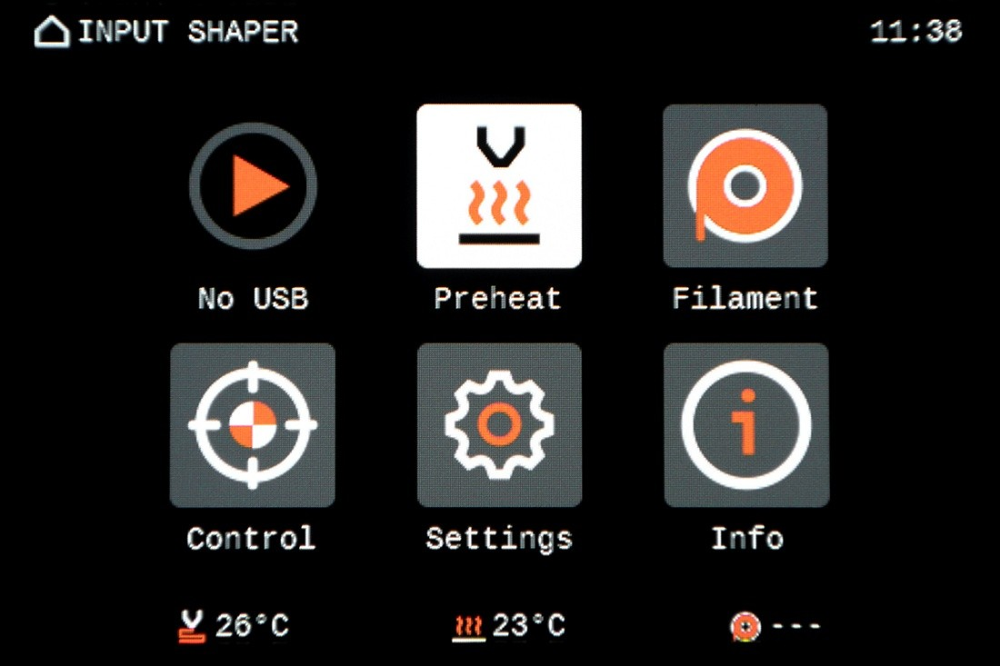
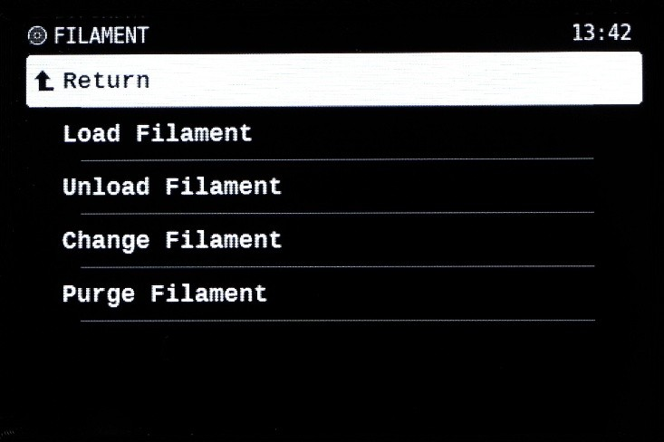
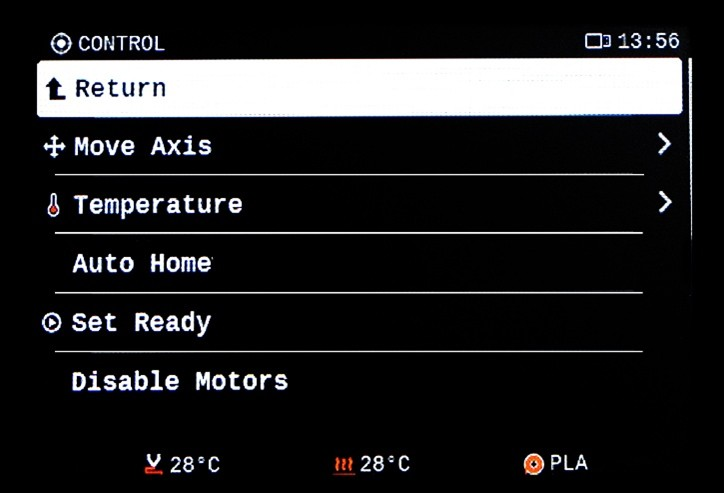
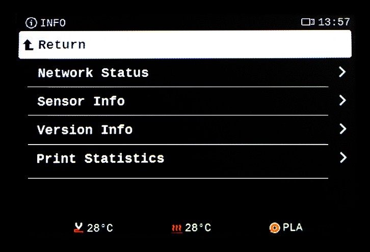
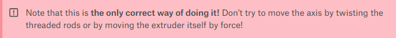

We are finally almost ready to begin our first print. But before we start, we need to learn how to control the printer. Let's just go very quickly through the basic menu - almost everything is pretty self-explanatory.

This is how the main “home" screen of the menu looks like. The upper right corner shows time, in the middle, there are 6 menu options, and at the bottom of the screen, you can see nozzle temperature, heat bed temperature, and type of material loaded into the printer. During a preheat, the temperatures will be in the format "current temperature/target temperature".
Please note that the printer has no way of detecting the filament material. It relies on the information given by the user when using the Load Filament function.
Before we start, keep in mind that the vast majority of the menu options are only useful for troubleshooting or testing purposes. For regular printing, you only ever need the Print and Filament menus.
This menu item reads No USB when the USB slot is empty, and changes to Print when a USB drive is inserted. Pretty self-explanatory: here you choose what files you want to print.
Through this menu, you can preheat the nozzle and the heatbed to a certain temperature, as per the chosen filament material. Under normal circumstances, you don't have to enter this menu at all - when printing, the correct preheat settings are always already included in the print file, and when loading a new filament, you choose the correct temperature through the Load Filament option. That means that this menu option is primarily needed just for cleaning, part replacement, or testing.

Here, you can Load or Unload Filament, Change Filament (which is just the two previous options one after another) or Purge Filament (i.e. get rid of the remnants of the previous filament color - normally, this is already included in the Load Filament procedure, though).

This menu contains a lot of testing/troubleshooting options, like disabling the motors or setting fan speed. Again, you will not normally need to use most of these functions.
Again, this menu contains a vast number of options, including serious actions such as a full factory reset. Please do not make any changes to these settings unless specifically instructed to do so.

The last menu option features a lot of various metrics and statistics - from a firmware version to a circuit board temperature. In the Statistics option of the Print Statistics submenu, you can see some fun numbers - how many meters of filament your printer already consumed, and how many meters (later kilometers) the individual axes traveled.
Last but not least, there is one important control feature that you can access without the menu, just by using the control knob. Press and hold the control knob for a few seconds, then release it. This screen will appear.
Now, you can twist the knob to move the extruder up and down (you can't move it lower than the initial position, though - this prevents the risk of plowing the nozzle into the print sheet accidentally).
The main reason you might want to move the extruder out of the way is for cleaning or removing the print sheet, or when you want to inspect the nozzle from below.
